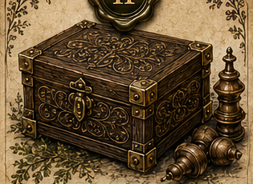
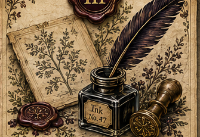
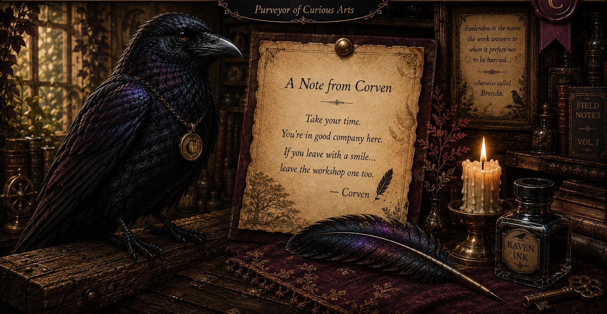

The Story
Discover how the name Faelendra came to be, and meet the maker otherwise called Brenda.
Read the StoryChoose a doorway.
WROUGHT BY
Purveyor of Curious Arts
Established quietly.
Enter kindly.
Where shall we begin?
The workshop door remains open.
Return whenever curiosity calls.
No curses included. Probably.
Beyond the Threshold
Each page holds another part of the story—how the name began, what has been wrought, and how a curious idea may become something made by hand.
Discover how the name Faelendra came to be, and meet the maker otherwise called Brenda.
Read the Story
A collection of hand-wrought curiosities in wood, earth, paint, and wandering imagination.
Open the Cabinet
Bring a beautifully specific idea to the workshop and begin a custom creation.
Open the LedgerQuestions, curious notions, or simply a civilized hello are always welcome.
Write to Faelendra
A Note from Corven
You're in good company here.
— Corven
“The chair by the window is usually my favorite...” “...but today, you should have it.”
Curiosity is always rewarded.
Until our paths cross again...
May your hands always find something worth making, and your curiosity never quite leave you.
Wrought by Faelendra
otherwise called Brenda.